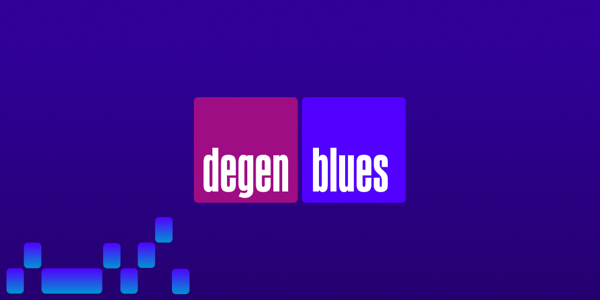

Side Projects
Degen Blues (2022)
 Degen Blues started as a way to for me explore designing and coding in web3, and evolved into something I think is pretty unique in the NFT space. It's a smart contract that generates a new "robot music" melody every 24 hours, based on the movements in that day's Ethereum prices. The collection launched in early 2022 with 545 unique melodies, and will continue to automatically produce a new melody each day for eternity.
As part of this project I also open sourced the DegenFetcher smart contract to make it easier for other creators to build dynamic NFTs on top of historical Chainlink data.
Onion Map (2020)
 Onion Map
Onion Map is a experimental map that radically deemphasizes streets, and highlights the relationship between topography and neighborhood names. It uses OpenStreetMap data, a bespoke Mapbox style, and some javascript to adjust contour colors dynamically based on the viewport.
Zoom Backgrounds for Biden (2020)

This started out as an art project between friends, and ended up raising $10,000 in donations for the Biden campaign.
In the early days of the Covid pandemic, what Zoom background to "wear" to work was every person's most visible fashion choice. With that in mind, I made a series of digital paintings intended for use as Zoom backgrounds—not too many garish colors, with plenty of room for your face in the middle. I did these paintings throughout 2020, first as a gift for a few friends, and later on a commission model, in exchange for contributions to the Biden/Harris campaign.
Sutro Tower
In addition to my digital work, I occasionally work on good old fashioned canvas. One of my favorite pieces is this oil painting called
Sutro Tower Inc—it shows the antennas of various TV and radio stations on the tower:

Older Projects
If you're looking for one of the Mac OS X apps I've developed in the past, like Shellsilver, Pyper, or Lunamoth: I'm sorry, these are no longer being maintained and are not compatible with current versions of Mac OS. There are lots of great alternatives out there, though.